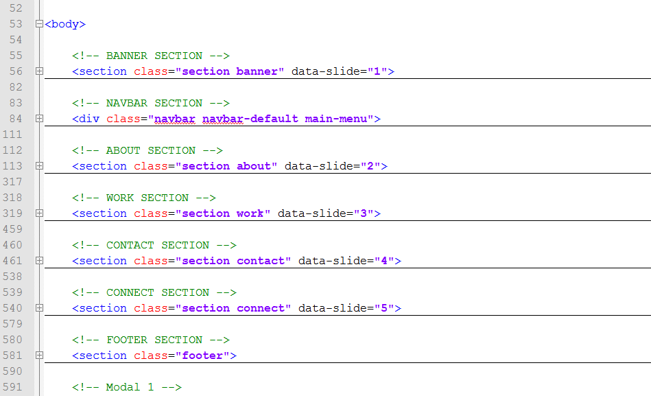
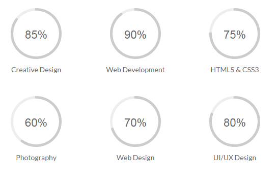

A) HTML Structure
Mbah Bedjo is a minimal resume, CV or portfolio template for creatives. It is built with Bootstrap, using HTML5, CSS3, JS and jQuery.
In general, there are many section of HTML structure
- BANNER ROTATOR SECTION
- NAVBAR SECTION
- ABOUT SECTION
- WORK SECTION
- CONTACT SECTION
- CONNECT SECTION
- FOOTER SECTION

Banner Rotator Structure
You can change text rotator by edited the "<div>" tags section
<h1>Mbah <span>Bedjo</span></h1> <div class="roles"> <div>...</div> <div>...</div> </div> </div>
You can change/add a image rotator by edited the "<img >" tags section
<div id="slides"> <div class="slides-container"> <img src="..." alt=""> <img src="..." alt=""> </div> </div>
NAVBAR SECTION
You can change/add navbar by edited the "<li>" tags section
<ul class="nav navbar-nav navbar-right">
<li data-slide="1"><a href="#" >...</a></li>
<li data-slide="2"><a href="#" >...</a></li>
</ul>
ABOUT SECTION
This section layout with 2 columns. First coloumn is within a div with an class of "box-resume". Second coloumn is within a div with an class of "we-do".
WORK SECTION
You can change/add work item by edited the class of "r-item".
<div class="r-item wow fadeInDown"> <a href="....." title="" data-toggle="modal" data-target="#....."> <img src="....." alt=""> <div class="project-info"> <div class="project-icon"> <span class="fa fa-search"></span> </div> <div class="separator_wrapper bounce_fade"> <div class="separator_first_circle"> <div class="separator_second_circle_grey"></div> </div> </div> <div class="details"> ..... </div> </div> </a> </div>
CONTACT SECTION
You can change coordinate google map by edited the atribute "data-lat" for latitute and "data-lng" for langitude
<div class="maps-wraper wow fadeInDown"> <div id="cd-zoom-in"></div> <div id="cd-zoom-out"></div> <div id="maps" class="maps" data-lat="...." data-lng="....." > <!-- maps --> </div> </div>
CONNECT SECTION
You can change/add work item by edited the class of "fa ....". You can see fontawesome cheet sheet.
<a href="#" title=""> <div class="item"> <div class="fa fa-facebook"></div> </div> </a> <a href="#" title=""> <div class="item"> <div class="fa fa-twitter"></div> </div> </a>
If you would like to edit the color, font, or style of any elements in one of these columns, you would do the following:
#primaryContent a { color: #someColor; }
If you find that your new style is not overriding, it is most likely because of a specificity problem. Scroll down in your CSS file and make sure that there isn't a similar style that has more weight.
#wrap #primaryContent a { color: #someColor; }
So, to ensure that your new styles are applied, make sure that they carry enough "weight" and that there isn't a style lower in the CSS file that is being applied after yours.
B) CSS Files and Structure
I'm using two CSS files in this theme. The first one is a generic reset file. Many browser interpret the default behavior of html elements differently. By using a general reset CSS file, we can work round this. This file also contains some general styling, such as anchor tag colors, font-sizes, etc. Keep in mind, that these values might be overridden somewhere else in the file.
The second file contains all of the specific stylings for the page. The file is separated into sections using:
/* ========================== RESET ============================= */ some code /* ========================== GENERAL LAYOUT ============================= */ some code /* ========================== BANNER ROTATOR ============================= */ some code /* ========================== NAVBAR ============================= */ some code /* ========================== ABOUT ============================= */ some code /* ========================== SKILL ============================= */ some code /* ========================== SKILL ============================= */ some code etc, etc.
Change color skill

<div class="circular-bar wow fadeInDown" data-wow-delay="300ms"> <input type="text" class="dial" data-fgColor="......" data-width="100" data-height="100" data-linecap=round value="....." > <div class="circular-label-content"> <label></label> </div> <div class="circular-bar-content"> Creative Design </div> </div>You can change color skill by edited the atribute "data-fgColor" like "#cccccc"
C) JavaScript
This theme imports many Javascript files.
- jQuery
- jquery.superslides
- wow.js
- maps.google
- Waypoints.js
- jquery knob
- My custom scripts (script.js)
- jQuery is a Javascript library that greatly reduces the amount of code that you must write.
-
Most of the animation in this site is carried out from the customs scripts. There are a few functions worth looking over.
$(document).ready(function() { $('#slides').superslides({ animation: "fade", play: 10000, slide_easing: 'easeInOutCubic', slide_speed: 800, pagination: true, hashchange: false, scrollable: true }); }); -
In addition to the custom scripts, I implement a few "tried and true" plugins to create the effects. This plugin is packed, so you won't need to manually edit anything in the file. The only necessary thing to know is how to call the method. For example:
$(document).ready(function() { var current = 1; var height = $('.roles').height(); var numberDivs = $('.roles').children().length; var first = $('.roles div:nth-child(1)'); setInterval(function() { var number = current * -height; first.css('margin-top', number + 'px'); if (current === numberDivs) { first.css('margin-top', '0px'); current = 1; } else current++; }, 2000); });
D) Sources and Credits
I've used the following images, icons or other files as listed.
- pexels (http://www.pexels.com/)
- Font Awesome (http://fortawesome.github.io/Font-Awesome/)
- Google Fonts (https://www.google.com/fonts)
- jQuery (http://jquery.com/)
- Bootstrap v3.3.2 (http://getbootstrap.com)
- Superslides (https://github.com/nicinabox/superslides)
- Waypoints (https://github.com/imakewebthings/jquery-waypoints)
- Animate CSS (http://daneden.github.io/animate.css/)
- WOW (http://mynameismatthieu.com/WOW/)
- Maps google (https://maps.google.com/maps/api/js?sensor=false&ver=4.1.5)
Once again, thank you so much for purchasing this theme. As I said at the beginning, I'd be glad to help you if you have any questions relating to this theme. No guarantees, but I'll do my best to assist. If you have a more general question relating to the themes on ThemeForest, you might consider visiting the forums and asking your question in the "Item Discussion" section.
Rudhi Sasmito
Back to Top